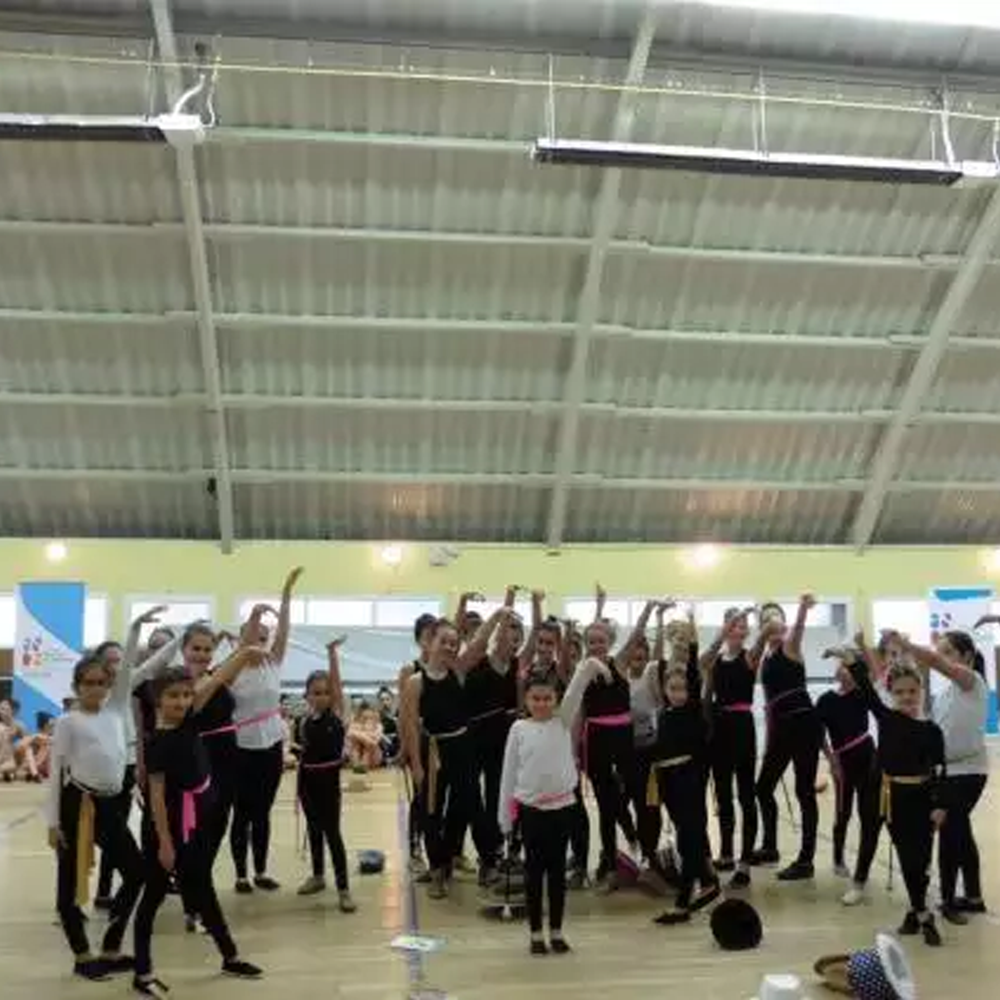
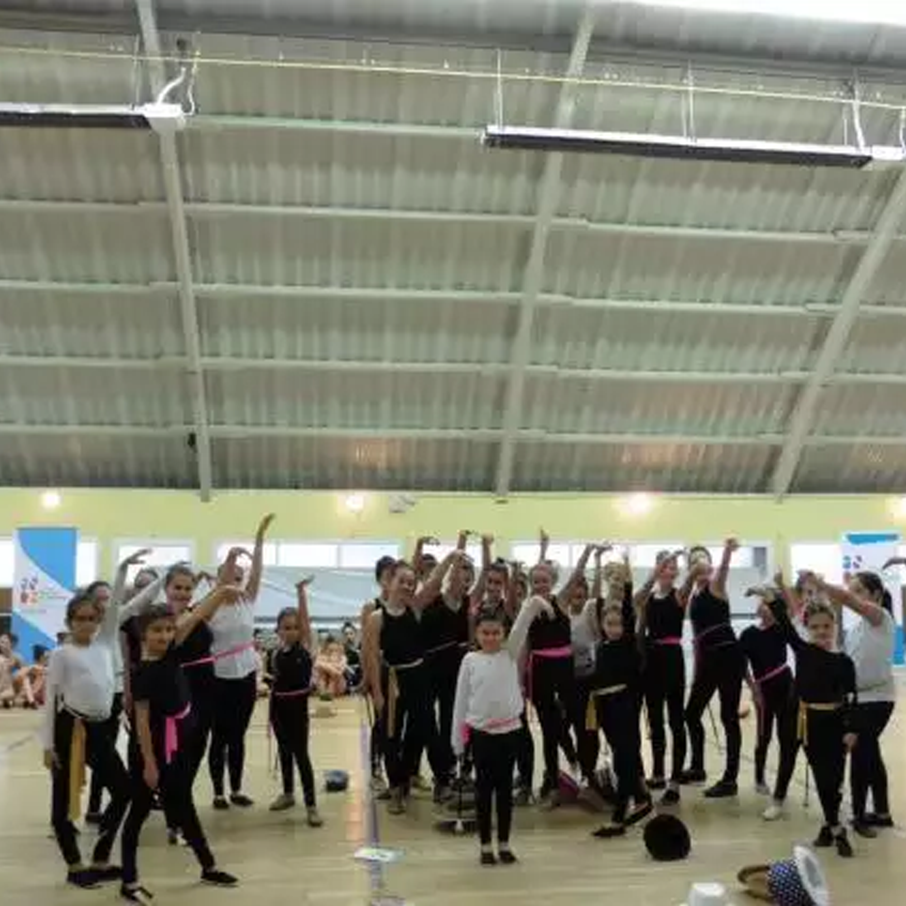
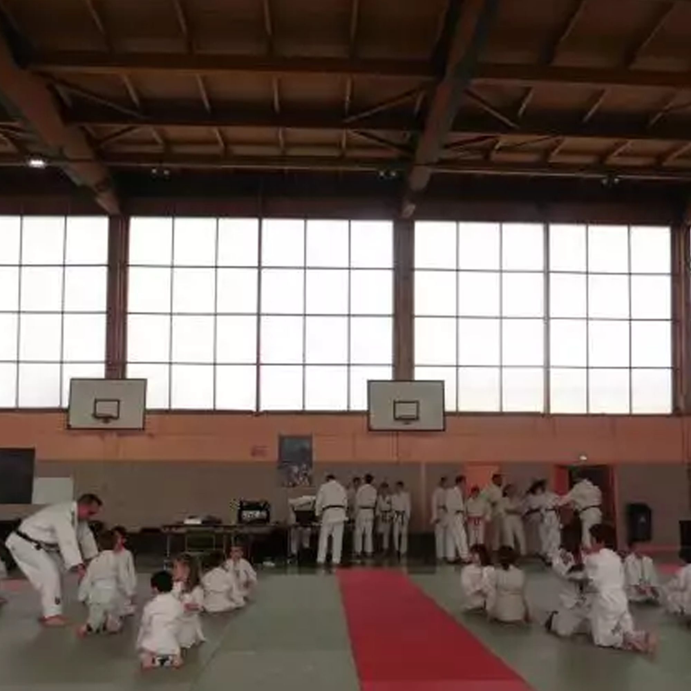
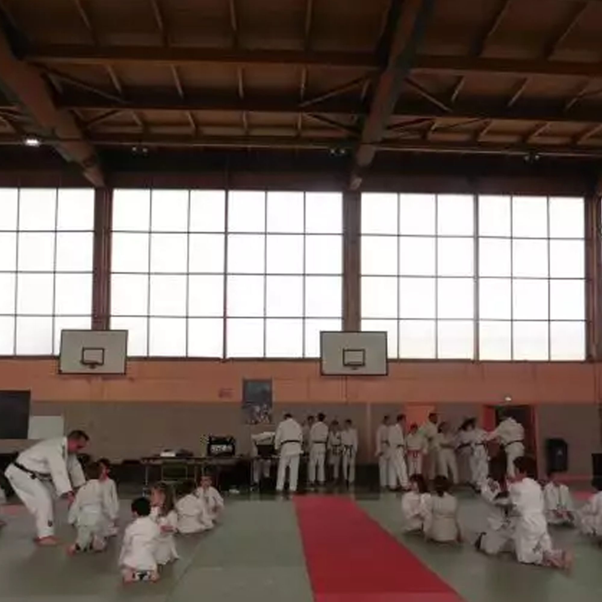
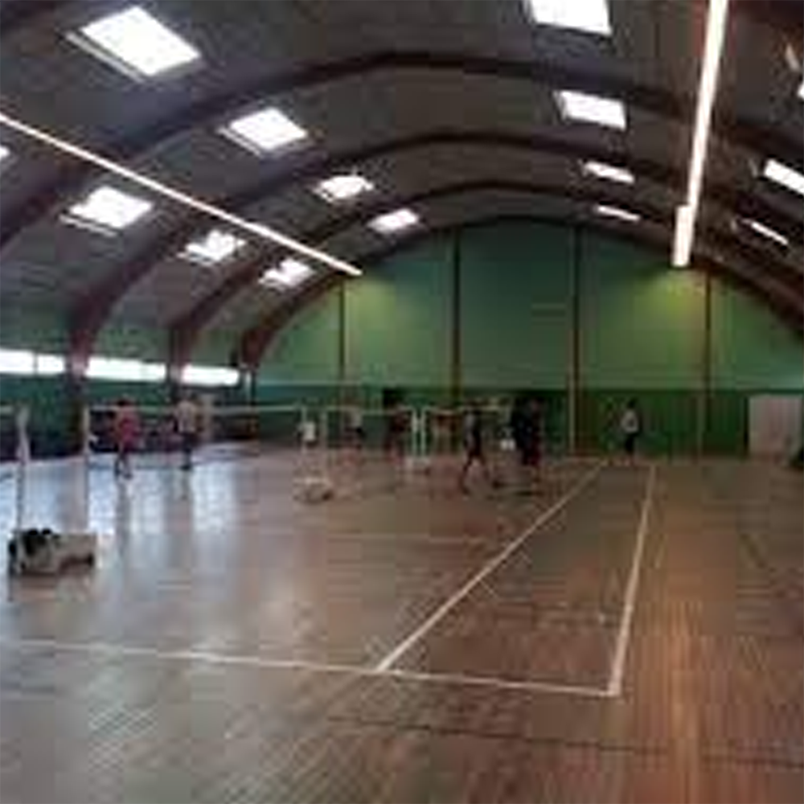
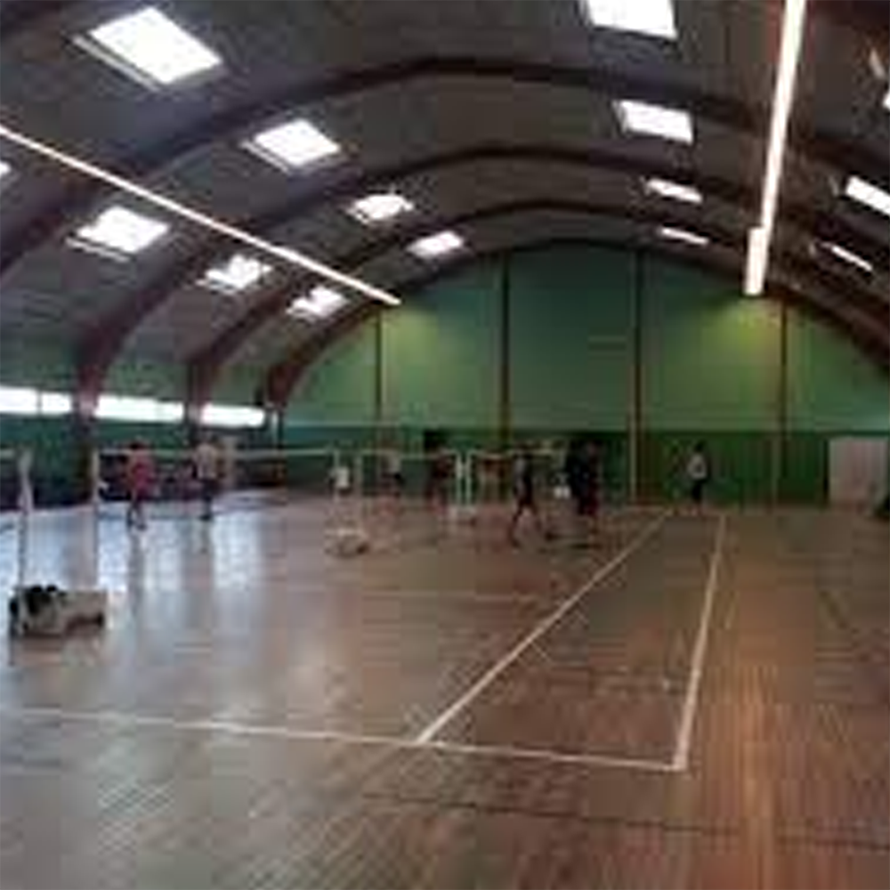

Les créneaux
Lundi
Juniors, Séniors
Individuelle
de 18h00 à 20h00
Salle Thomas Dupouet
Mercredi
Poussins
Équipe
de 15h30 à 17h00
Salle Pierre Coubertin
Benjamins, Minimes, Cadets
Individuelle
de 18h30 à 20h00
Salle Omnisports
Vendredi
Benjamins, Minimes, Cadets
Équipe
de 18h00 à 19h30
Salle Thomas Dupouet
Junior, Sénior
Équipe
de 19h30 à 21h00
Salle Thomas Dupouet
 

 

 
